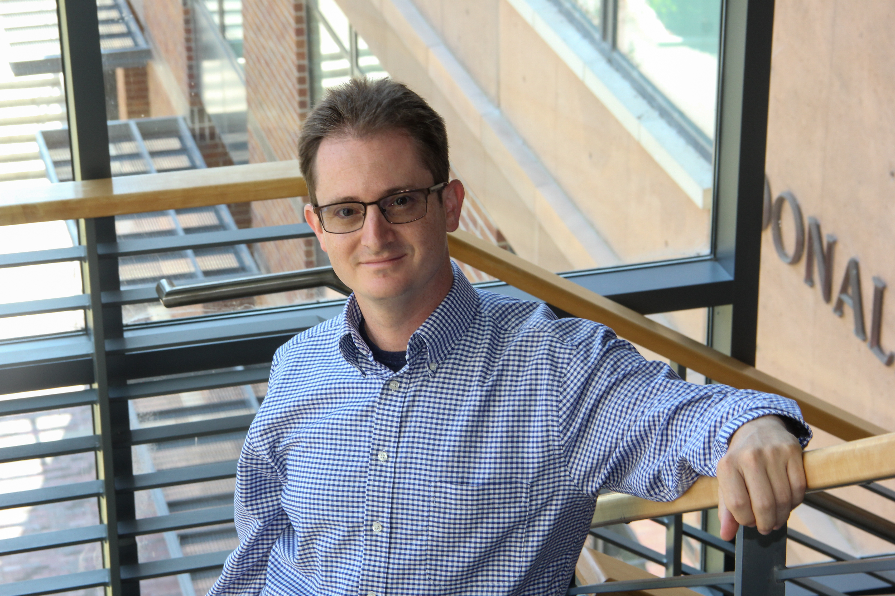

Michael Shindler
I am an Associate Professor of Teaching in the Computer Science Department at UC Irvine.
Office: DBH 4058
If you want to meet with me, for example if you are thinking of graduate school and want to discuss it, and would otherwise drop by my office hours, but aren't in my class this term, please send me an email and I will try to find time to meet with you.
To form my email address:
-
For course-related topics, concatenate mikes with [at] ics [dot] uci [dot] edu
-
For all other topics, concatenate mikes with [at] uci [dot] edu
My research focuses primarily on educational issues in computer science; I am particularly interested in issues related to teaching Computer Science Theory courses, such as identifying and correcting student misconceptions in these courses and also discovering concept inventories. I am also interested in more general issues involving the scaling of class sizes and making efficient use of resources for student learning.
In the past, my computer science research touched on computations on large datasets, machine learning, approximation algorithms, streaming algorithms, and data mining.
If you are planning to ask me for a letter of recommendation, please read this first.
|

|
Educational Background
-
PhD in Computer Science from UCLA, 2011
Advisor: Adam Meyerson
-
Master of Science in Computer Science from UCLA, 2008
Advisor: Adam Meyerson
-
Bachelor of Science in Information and Computer Science from UC Irvine, 2005.
|
Erdos Number
My Erdos number is 3:
- I co-authored Streaming k-means on Well-Clusterable Data (SODA 2011) with Rafail Ostrovsky (and also with Vladimir Braverman, Adam Meyerson, Alan Roytman, and Brian Tagiku)
- Rafail Ostrovsky co-authored The linear-array conjecture in communication complexity is false (STOC 1996) with Nathan Linial (and also with Eyal Kushilevitz)
- Nathan Linial co-authored Extremal problems on permutations under cyclic equivalence (Discrete Math, 1987) with Paul Erdos (and also with Shlomo Moran)
I would like to thank the American Mathematical Society's collaboration distance calculator for providing me with an easy way to determine this.
|